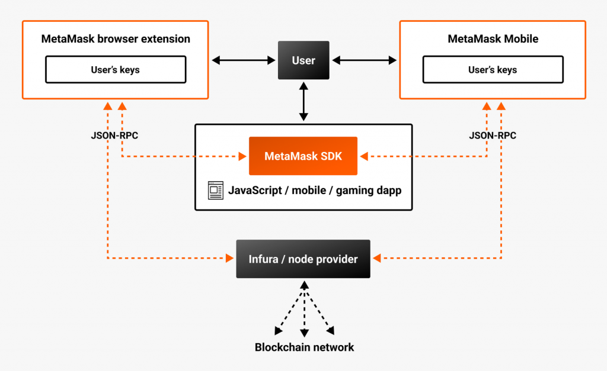
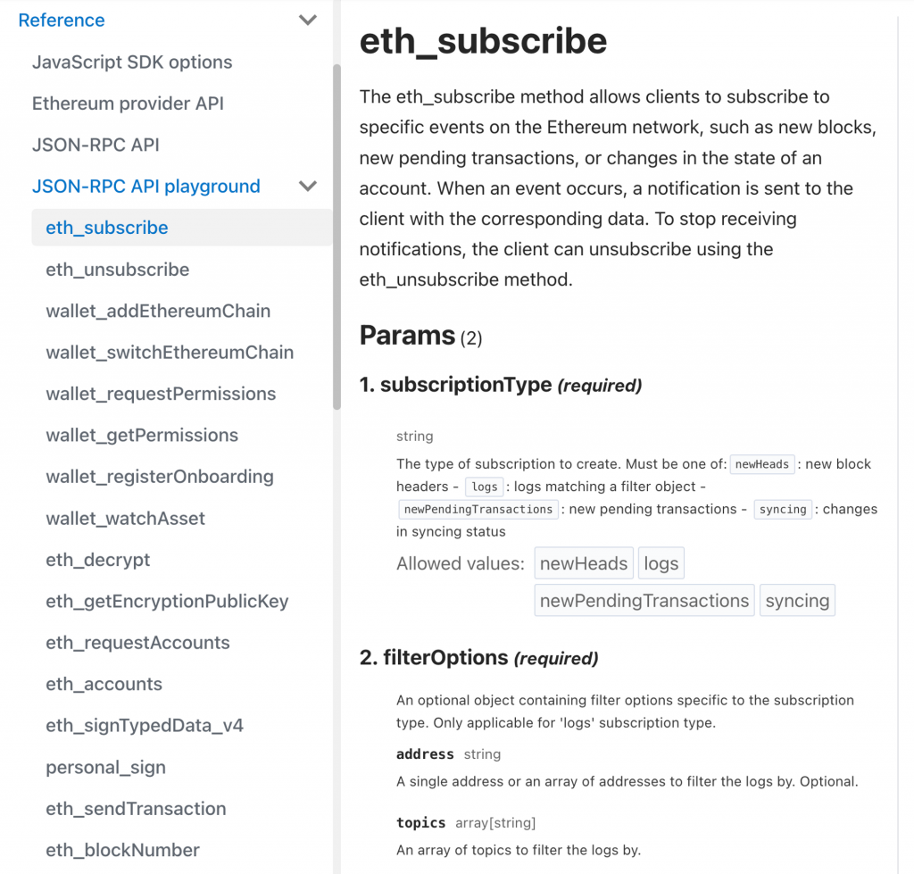
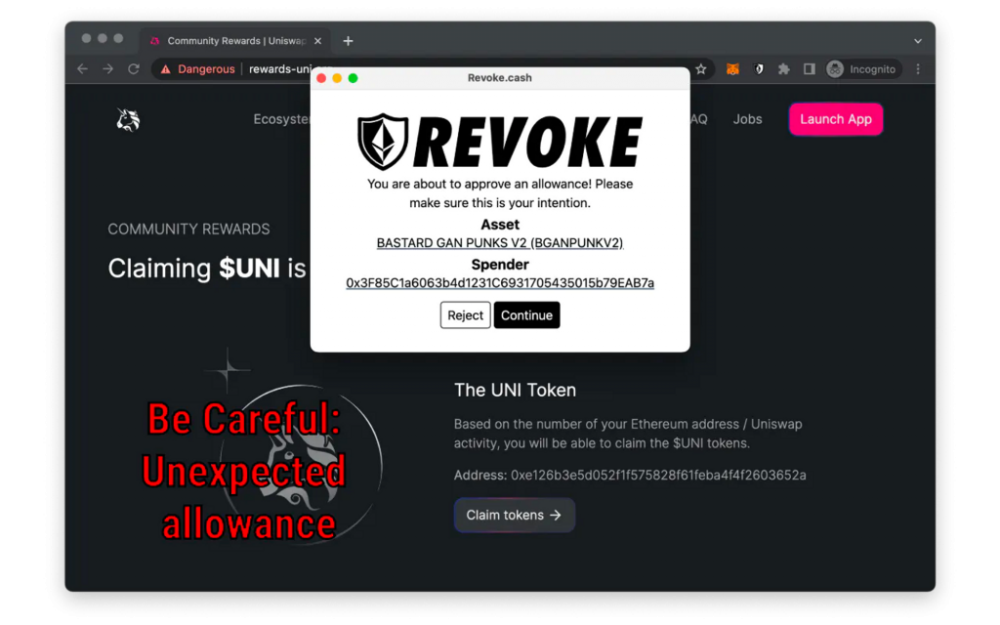
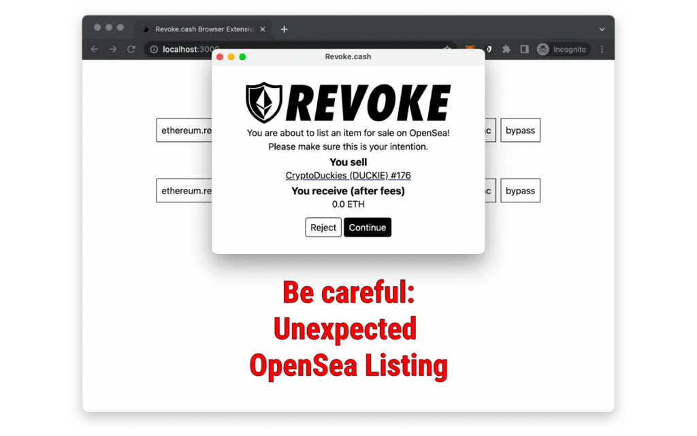

今天我們會來介紹瀏覽器錢包 Extension 的原理，包含解釋更底層的概念如 Wallet Provider, JSON-RPC API 等等，這樣在使用一些 wagmi, viem 或 ethers.js 中較底層的 API 時可以更清楚裡面提到的概念。另外也會基於這些知識介紹 Revoke Cash 的防止釣魚交易的瀏覽器 Extension，以及他背後是如何實作的。
如果讀者曾經好奇 Metamask Extension 的運作方式的話，官方文件中有一個架構圖可以看到 Metamask Extension 跟 DApp, User, 區塊鏈節點之間的關係：

簡單來說 Metamask Extension
內會保管使用者的私鑰，在使用者進到一個新頁面時，會對 window 注入一個
window.ethereum 物件來讓 DApp 可以透過這個物件跟 Metamask
Extension 互動。
DApp 的開發者可以透過 Metamask SDK 包裝好的方法來跟
window.ethereum
互動以對區塊鏈進行讀寫，包含讀取現在使用者連接了哪個錢包、錢包餘額、Nonce、發送交易等等。而
window.ethereum 在收到一些 DApp
來的請求時，會根據請求類型去決定要自己處理還是轉由區塊鏈節點服務處理。例如：
因此 Metamask inject 的 window.ethereum
物件就包含了所有跟區塊鏈互動所需的 function。在 Metamask 的 Provider
API 文件中就有寫到這個物件提供的 property 與 function 們，包含：
[code] window.ethereum.isMetaMask window.ethereum.isConnected(): boolean;
interface RequestArguments {
method: string;
params?: unknown[] | object;
}
window.ethereum.request(args: RequestArguments): Promise<unknown>;
// Listen to event
function handleAccountsChanged(accounts) {
// Handle new accounts, or lack thereof.
}
window.ethereum.on('accountsChanged', handleAccountsChanged);
window.ethereum.removeListener('accountsChanged', handleAccountsChanged);[/code]
因此許多前端 web 3 相關的 library（如 ethers.js, web3.js, wagmi, viem
等等）都是幫我們串接好跟 window.ethereum
物件的互動來提供更高層次的用法。像 wagmi 裡提供了一個
InjectedConnector （文件），指的就是可以連上任何有
Inject window.ethereum 進當前頁面的 Wallet Extension。
除了 Metamask 之外，也有很多其他的 EVM 錢包 Extension，像是 Coinbase
Wallet, Rabby 等等，如果讀者有安裝 Metamask 以外錢包的話，會發現在 DApp
中按下連接 Metamask
時可能會連到其他錢包！在了解上面的機制後就很好理解原因了：這些 Wallet
Extension 也同樣定義了 window.ethereum 物件，並且可能把
Metamask 給覆蓋掉了，只要他定義的物件跟 Metamask 的物件有一樣的
interface，那麼對 DApp 來說就是正常的發所有跟區塊鏈相關的請求給
window.ethereum ，並不會察覺到任何不同。
這個介面其實也有一個標準，也就是 EIP-1193 中定義的
Ethereum Provider JavaScript API，他把 window.ethereum 這個
JavaScript 物件稱為 Provider，代表區塊鏈操作的提供者，而要跟 Provider
互動就會透過 JSON-RPC API 的介面。
在前幾篇文章中都有陸續提到 JSON-RPC 的概念，但都還沒有講得很清楚。其實我們之前已經使用過很多次 JSON-RPC API 了，以這個打 Alchemy 的請求為例：
[code] curl –request POST
–url https://eth-mainnet.g.alchemy.com/v2/docs-demo
–header ‘accept: application/json’
–header ‘content-type: application/json’
–data ’ { “id”: 1, “jsonrpc”: “2.0”, “params”: [
“0xe5cB067E90D5Cd1F8052B83562Ae670bA4A211a8”, “latest” ], “method”:
“eth_getBalance” }’
[/code]
可以看到他是對
https://eth-mainnet.g.alchemy.com/v2/docs-demo 的 POST
請求，而請求的方法跟參數都寫在 POST body 中，所以不管是要呼叫哪個方法的
API（如 eth_estimateGas, eth_getLogs
等等），都只要改動請求中的 method 與 params
參數即可，POST 的網址都會是固定的。
因此他跟一般較常見的 RESTful API 很不同，RESTful API 定義了一套對於資源的描述與操作方式，因此不同資源會用不同的網址。JSON-RPC API 則是不管是讀是寫、是什麼資源，都把請求描述在POST 的 JSON Body 中，來達到 Remote Procedure Call 的目的（也就是透過網路去呼叫遠端的函式）。這種 API 的介面被廣泛應用在 EVM 區塊鏈相關的程式呼叫中。
在 Metamask 的 Wallet Provider 中定義了一個 request()
function，他的介面就正好是 JSON-RPC API 的樣子：
[code] interface RequestArguments { method: string; params?:
unknown[] | object; } window.ethereum.request(args: RequestArguments):
Promise
[/code]
如同 Metamask 文件中的描述：
MetaMask uses the
[window.ethereum.request(args)](https://docs.metamask.io/wallet/reference/provider-api/#windowethereumrequestargs)provider method to wrap a JSON-RPC API. The API contains standard Ethereum JSON-RPC API methods and MetaMask-specific methods.
因此這個 function 就是 Metamask Wallet Provider 幾乎所有功能的進入點，因為可以用它來呼叫任何 JSON RPC method。至於到底有哪些 method 可以用呢？以 Metamask 為例他已經把所有的 JSON-RPC method 都列在官方文件的 JSON-RPC API Playground 中了（圖中只是一小部分）

到這裡就可以對 JSON-RPC 的應用場景做個總結了，會用到 JSON-RPC API 的地方主要有兩個：
window.ethereum.request() 發送 JSON-RPC 形式的請求而在 viem 中（wagmi 底層使用的跟 Ethereum Wallet Provider 互動的套件），恰好區分出這兩種類型的 Client（參考文件），比對上面的描述就會十分清楚：
A Client provides access to a subset of Actions. There are three types of Clients in viem:
getBlockNumber and
getBalance.
sendTransaction and
signMessage.mine and
impersonate.介紹完這麼多關於 Browser Extension, Wallet Provider, JSON-RPC 的概念後，實際有什麼應用呢？前一天提到的 Revoke Cash 其實還有出一個 Browser Extension，是用來防止一些釣魚網站騙使用者簽下可能會導致資產損失的交易/簽名，因為通常這些釣魚網站會偽裝成給使用者一些好處（免費領取代幣或 NFT），但實際上是送出 Approve 交易或是簽下 Permit 訊息等操作。Revoke Cash 的 Extension 就可以在使用者進行任何錢包操作前先經過一層風險偵測，警告使用者這個操作是否可能是可疑的操作。使用起來如下圖：


第一張圖是 Approve 交易，第二張圖是簽署「NFT 零元購」的 Typed Message，意思就是會把自己的 NFT 免費送別人（詳細的原理今天不會講到，有興趣的讀者可以自行查詢）。有了前面的知識，就能知道這個 Extension 是如何運作的了。
程式碼在這裡，核心思想是只要覆蓋
window.ethereum 物件，在 DApp
發送任何關於簽名交易、Personal Message、Typed Data 的操作時，都先經過
Revoke cash extension 的處理，如果符合特定的 pattern
就彈出警告視窗，使用者確認後再繼續呼叫原本 window.ethereum
中的處理流程即可。主要的邏輯在 proxy-injected-providers.tsx
檔案中：
[code] const sendHandler = { // … }; const sendAsyncHandler = { // … }; const requestHandler = { // … };
const requestProxy = new Proxy(window.ethereum.request, requestHandler);
const sendProxy = new Proxy(window.ethereum.send, sendHandler);
const sendAsyncProxy = new Proxy(window.ethereum.sendAsync, sendAsyncHandler);
window.ethereum.request = requestProxy;
window.ethereum.send = sendProxy;
window.ethereum.sendAsync = sendAsyncProxy;[/code]
這裡就不展開講每個 handler
中做的細節，有興趣的讀者可自行閱讀。不過一個有趣的點是他會在初始化後每
100ms 去看當下的 window.ethereum 是否已經被其他 Extension
inject 進來了，有了之後才會對 window.ethereum
中原本的三個方法做 Proxy：
[code] const overrideWindowEthereum = () => { if (!window.ethereum) return; clearInterval(overrideInterval); // … };
overrideInterval = setInterval(overrideWindowEthereum, 100);
overrideWindowEthereum();[/code]
雖然是個簡單粗暴的方法，不過十分有效！
今天我們從 Metamask 的原理講起，介紹了 Wallet Provider 跟 JSON-RPC API 的機制，以及應用他來看懂 Revoke Cash Extension 的實作方式，用一樣的方式讀者也有能力開發需要攔截 JSON-RPC Request 的任何 Extension 了（像是市面上也有其他掃描錢包操作的 Extension）。明天我們會介紹並實作一個可以讓使用者不需付 Gas Fee 的代發交易機制，也就是 Meta Transaction。